|
|

|
|
|
|
|
Technological Advances Achieved in the NSX-R
|
|
Improved
aerodynamics to significantly increase
vehicle stability and cornering performance at high
speeds
In
order to endow the new NSX-R with outstanding high-speed
performance, we turned our attention to aerodynamics
and their effect on high-speed cornering power,
braking, turn-in, and other aspects affecting vehicle
controllability. This led us to a new technical
approach called "aerodynamically-induced stability".
In addition to increasing high-speed cornering power,
we have also striven to improve vehicle control
quality - the ease with which the driver can control
the car, and thus exploit its full potential. This
enabled the chassis to be tuned for reduced understeer
at low to medium speeds. The resultant improved
handling at both low and high speeds endows the
New NSX-R with outstanding speed on all types of
circuits.
|
Fundamentals
behind downforce and aerodynamic stability
for improved high-speed vehicle handling
|
In
order to endow the new NSX-R with outstanding high-speed
performance, we turned our attention to aerodynamics
and their effect on high-speed cornering power,
braking, turn-in, and other aspects affecting vehicle
controllability. This led us to a new technical
approach called "aerodynamically-induced stability".
In addition to increasing high-speed cornering power,
we have also striven to improve vehicle control
quality - the ease with which the driver can control
the car, and thus exploit its full potential. This
enabled the chassis to be tuned for reduced understeer
at low to medium speeds. The resultant improved
handling at both low and high speeds endows the
New NSX-R with outstanding speed on all types of
circuits.
|
|
The
third advantage of downforce is that it helps reduce
body roll as well as body pitch. This in turn helps
reduce sudden variations in vertical forces applied
to the tires at the limit, increasing vehicle stability
in the wake of driver input. Vehicle behavior is
also more linear near the limit of adhesion, contributing
to increased driver control. In other words, creating
downforce to press the vehicle onto the road as
speed increases not only contributes to increased
absolute cornering speed and thus absolute dynamic
performance, but also significantly improves vehicle
control quality as measured by response to driver
inputs and vehicle stability at the limit. These
are the fundamentals behind downforce and aerodynamic
stability as a means to improved high-speed vehicle
handling.
|
Relationship
between vertical force and cornering force
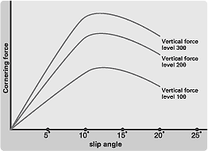
As
the vertical force applied to the tire increases,
cornering force also increases. In other words,
increasing the vertical force applied to the tire
has the same effect as using larger tires.
|
|
How
downforce helps control changes in attitude
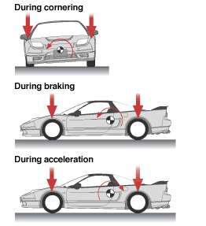
Downforce
helps reduce body roll while cornering and body
pitch during braking or acceleration. This also
helps reduce sudden variations in vertical forces
applied to the tires at the limit, for increased
vehicle stability. Downforce not only increases
dynamic performance, but also creates a more stable
vehicle behavior environment for steering, throttle,
and braking inputs. |
Extensive
circuit testing to determine the optimum
equilibrium between downforce and front-to-rear
balance
|
In
order to endow the new NSX-R with outstanding high-speed
performance, we turned our attention to aerodynamics
and their effect on high-speed cornering power,
braking, turn-in, and other aspects affecting vehicle
controllability. This led us to a new technical
approach called "aerodynamically-induced stability".
In addition to increasing high-speed cornering power,
we have also striven to improve vehicle control
quality - the ease with which the driver can control
the car, and thus exploit its full potential. This
enabled the chassis to be tuned for reduced understeer
at low to medium speeds. The resultant improved
handling at both low and high speeds endows the
New NSX-R with outstanding speed on all types of
circuits.
|
|
The
third advantage of downforce is that it helps reduce
body roll as well as body pitch. This in turn helps
reduce sudden variations in vertical forces applied
to the tires at the limit, increasing vehicle stability
in the wake of driver input. Vehicle behavior is
also more linear near the limit of adhesion, contributing
to increased driver control. In other words, creating
downforce to press the vehicle onto the road as
speed increases not only contributes to increased
absolute cornering speed and thus absolute dynamic
performance, but also significantly improves vehicle
control quality as measured by response to driver
inputs and vehicle stability at the limit. These
are the fundamentals behind downforce and aerodynamic
stability as a means to improved high-speed vehicle
handling.
|
Downforce
balance front to rear (Straight-line driving at
constant speed)
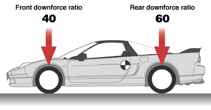
By
creating a downforce with the same front-to-rear
balance as vehicle weight, changes in steering characteristics
from low to high speeds remain well under control.
At higher speeds this translates into a more linear
response. More precise control of the vehicle helps
the driver delve further into the car's potential.
|
|
Testing
at Honda's proving grounds in Takasu, Hokkaido |
A
front hood air duct:
the aerodynamic mechanism for creating downforce
At
the rear, downforce is easily obtained using a wing-type
spoiler. At the front, though, adding too big an
aerodynamic device can negatively affect minimum
ground clearance and/or the approach angle. Increased
aerodynamic resistance resulting in reduced acceleration
is also another example of the many problems associated
with obtaining appropriate downforce in a road-going
car.
The solution we chose was to design the underbody
of the car as flat as possible to encourage smooth
airflow under the car, maintaining airflow speed
to create downforce. This method not only provides
for adequate ground clearance and approach angle
but also does not unduly increase the forward-protruding
surface of the body. However, this led to a new
problem: how to extract the airflow through the
front radiator that had previously been channeled
underneath the car?
Taking advantage of the car's mid-ship layout, an
air duct was added in the front hood to provide
the necessary extraction route. Longitudinal fins
were also added to the outer left and right sides
of the front under-cover tray to prevent the air
passing under the car from entering the front wheel
wells. Similarly, spats have been added to both
sides of the air ducts to channel air passing through
the ducts away from the wheel wells. The opening
ratio under the front bumper has also been reduced
to limit as much as possible the actual amount of
air flowing through. All these innovations result
in a smoother airflow both under the body and through
the front hood, achieving the desired downforce.
No large aerodynamic appendage was required, helping
maintain the original NSX's overall design and ensure
a relatively low aerodynamic drag. Downforce was
thus achieved without sacrificing top speed.
Wind tunnel tests have shown that when the car is
at an angle relative to wind direction, the longitudinal
fins of the front under-cover tray function in the
same way as the chin spoiler, effectively reducing
body lift and improving transient characteristics. |
Wind
tunnel testing
|
| 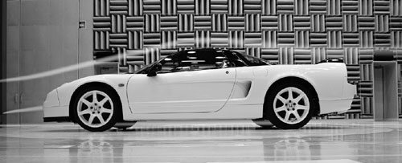 |
View
of the underbody
|
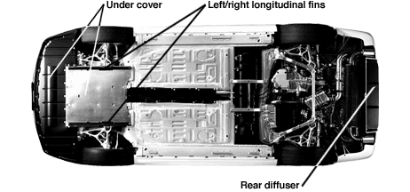
|
|
|
|
Cd
(Drag coefficient): 0.32
Cl (Lift coefficient/overall): -0.100
Clf (Lift coefficient/ front): -0.040
Clr (Lift coefficient/rear): -0.060
Compared
to the original NSX-R, this translates into an increase
in vertical force acting on the front tires of 36.2kgf,
and of 25.0kgf on the rear tires (test results measured
at 180 km/h in both cases).
|
|
Lift
reduction measures (effect measured piece-by-piece)
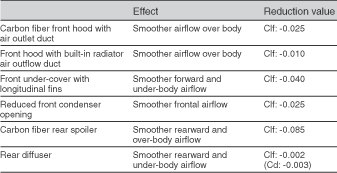
|
|
|
|
|
|
|
Extensive
circuit testing to determine the optimum
equilibrium between downforce and front-to-rear
balance
The air duct in the front hood could have been made
simply by cutting an opening and trimming the edges
with plastic. But because we wanted to maintain
the beauty of the original design including the
simplicity of line worthy of a car cut for speed
like the NSX-R, and to reach the weight reduction
target we had set for ourselves, we chose carbon
fiber instead. The rear spoiler is similarly a single
piece of carbon fiber designed to achieve the required
downforce while maintaining a low drag coefficient
in a simple shape embodying functionality and beauty.
Both parts are formed using an autoclave, a method
more often seen in aircraft manufacture. Multiple
layers of pre-pregs made of resin-impregnated carbon
fibers are cured in a high-pressure oven to form
the parts. The front hood is made of carbon Aramid
fibers for added resistance to tearing. In the event
of an accident, it is designed not to shatter into
small pieces. During the laminating process, fibers
are offset by 45 degrees, with each layer above
and below being symmetrically angled to provide
equal strength in all directions.
Nine to ten hours are required to complete the laminating
process of each single part. After lamination, the
whole lay-up is wrapped in a baking film, and a
vacuum is applied to consolidate the laminate prior
to curing for 2-3 hours in the autoclave at a pressure
of two to three atmospheres. Once in the autoclave,
it takes one hour to bring the part to temperature,
while some five hours are required for the cooling
down process. Air released from the resin when liquefying
at high temperature is carefully bled off to form
a strong CFRP (Carbon-Fiber Reinforced Plastic).
The front hood's outer skin is formed separately
from the inner frame before being glued together.
Glue thickness is strictly maintained at less than
0.5mm. The resultant strength is superior to that
of the base materials. The rear spoiler is a hollow,
one-piece molding made using a proprietary process
developed in cooperation with a parts supplier.
Durability, a matter not normally emphasized in
aerodynamic carbon fiber parts manufacture, has
been pursued to the utmost. In all aspects of the
product, durability on par with steel is achieved.
The painting process has also been the object of
painstaking attention, especially regarding the
undercoating, with both parts undergoing a "5 coat/5
bake" process. For the front hood in particular,
paint has been applied so as to let the roughness
of the carbon fiber surface show through ever so
slightly.
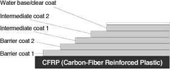
|
|
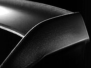
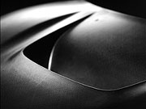 |
|
|
|
In
order to endow the new NSX-R with outstanding high-speed
performance, we turned our attention to aerodynamics
and their effect on high-speed cornering power,
braking, turn-in, and other aspects affecting vehicle
controllability. This led us to a new technical
approach called "aerodynamically-induced stability".
In addition to increasing high-speed cornering power,
we have also striven to improve vehicle control
quality - the ease with which the driver can control
the car, and thus exploit its full potential. This
enabled the chassis to be tuned for reduced understeer
at low to medium speeds. The resultant improved
handling at both low and high speeds endows the
New NSX-R with outstanding speed on all types of
circuits.
|
|
The
third advantage of downforce is that it helps reduce
body roll as well as body pitch. This in turn helps
reduce sudden variations in vertical forces applied
to the tires at the limit, increasing vehicle stability
in the wake of driver input. Vehicle behavior is
also more linear near the limit of adhesion, contributing
to increased driver control. In other words, creating
downforce to press the vehicle onto the road as
speed increases not only contributes to increased
absolute cornering speed and thus absolute dynamic
performance, but also significantly improves vehicle
control quality as measured by response to driver
inputs and vehicle stability at the limit. These
are the fundamentals behind downforce and aerodynamic
stability as a means to improved high-speed vehicle
handling.
|
Downforce
balance front to rear (Straight-line driving at
constant speed)
By
creating a downforce with the same front-to-rear
balance as vehicle weight, changes in steering characteristics
from low to high speeds remain well under control.
At higher speeds this translates into a more linear
response. More precise control of the vehicle helps
the driver delve further into the car?s potential.
|
|
Testing
at Honda's proving grounds in Takasu, Hokkaido |
Outstanding
cornering speeds achieved
under all conditions from high to low speeds
For
ultimate speed on the circuit, a specially designed
tire with an asymmetrical tread pattern was selected.
At the same time, roll rigidity, performance envelope
and response were all increased in the pursuit of
further improved cornering speeds. The newly gained
aerodynamic stability leads to improved high-speed
stability, allowing the understeer setting previously
adopted for low to medium cornering speeds to be
reduced. Front turn-in response has also been increased
toward a more controllable setting for the driver.
To supplement the added speed, braking capacity
has also been increased, particularly in the area
of fade resistance on circuit runs. The anti-lock
brake system has also been fine-tuned for even greater
stability when braking hard at high speeds.
|
Combining
high-speed stability with low-speed cornering performance
|
By
contributing to increased high-speed stability,
the aerodynamically induced downforce achieved in
the New NSX-R has allowed the selection of a harder
suspension setting to further increase cornering
performance and overall dynamic performance.
Overall, the suspension is tuned to promote higher
cornering limits and improved handling response.
The first issue we addressed was roll rigidity,
equipping the NSX-R with heavier-duty springs, new
spring material for reduced weight, increased damping
rates, larger stabilizer bars, reinforced damper
mount and rear control arm bushings for a sharper,
more responsive drive. The stabilizer bar bushing
is now self-lubricating for increased rigidity,
enhancing the stabilizer bar's effect.
Compared to the rear, the front suspension is tuned
to increase road holding. Reduced understeer contributes
to improved cornering behavior around tight bends,
while
|
|
aerodynamically-improved
stability delivers superior performance at higher
speeds, for further enhanced performance under all
circuit conditions. LSD (limited-slip differential)
pre-loading has been tuned to take into account
the increased cornering performance provided by
aerodynamic downforce, for improved traction. Body
rigidity has also been fine-tuned, with the adoption
once again of front and rear tower bars. Although
the front tower bar is the same as that of the original
NSX-R, the rear one has been thickened from t1.0mm
to t2.3mm over the original setting, for increased
rear roll rigidity.
The dampers have also seen their damping rate increased,
although particular attention has been paid this
time to damping characteristics for minor inputs
at very low speeds, with the objective of further
smoothing out minor vibrations. The pistons used
in the dampers are now polished to minimize production
tolerances and reduce differences from damper to
damper.
|
| 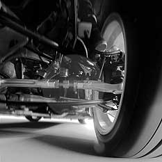 |
|
Comparison
of major suspension characteristics
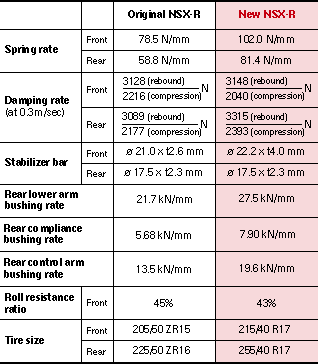
|
Extensive
circuit testing to determine the optimum
equilibrium between downforce and front-to-rear
balance
In
order to endow the new NSX-R with outstanding high-speed
performance, we turned our attention to aerodynamics
and their effect on high-speed cornering power,
braking, turn-in, and other aspects affecting vehicle
controllability. This led us to a new technical
approach called "aerodynamically-induced stability".
In addition to increasing high-speed cornering power,
we have also striven to improve vehicle control
quality - the ease with which the driver can control
the car, and thus exploit its full potential. This
enabled the chassis to be tuned for reduced understeer
at low to medium speeds. The resultant improved
handling at both low and high speeds endows the
New NSX-R with outstanding speed on all types of
circuits.
|
|
Extensive
circuit testing to determine the optimum
equilibrium between downforce and front-to-rear
balance
The
third advantage of downforce is that it helps reduce
body roll as well as body pitch. This in turn helps
reduce sudden variations in vertical forces applied
to the tires at the limit, increasing vehicle stability
in the wake of driver input. Vehicle behavior is
also more linear near the limit of adhesion, contributing
to increased driver control. In other words, creating
downforce to press the vehicle onto the road as
speed increases not only contributes to increased
absolute cornering speed and thus absolute dynamic
performance, but also significantly improves vehicle
control quality as measured by response to driver
inputs and vehicle stability at the limit. These
are the fundamentals behind downforce and aerodynamic
stability as a means to improved high-speed vehicle
handling.
|
Custom
designed tires and forged aluminum wheels
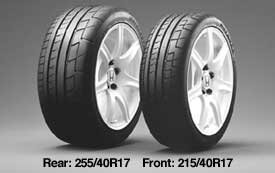 |
|
Slit-surfaced
brake rotors
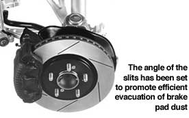 |
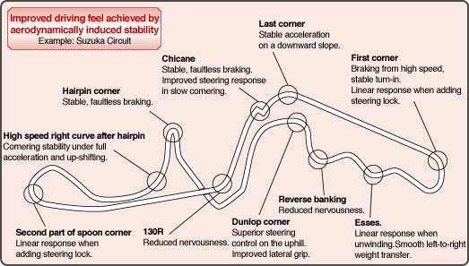 |
Further-honed
engine response
Even more linear throttle response
In
addition to aerodynamically-induced stability, the
ultimate in vehicle control calls for further detailed
tuning to bring man and machine even closer together.
Drawing upon know-how acquired through racing at
Le Mans and in the Japanese GT Championship, time-consuming
high precision production methods have been adopted
to create an even better engine feel. We also worked
to improve the feeling of linearity between throttle
operation and the resultant variation in torque
output.
|
Blueprinting
and balancing of the crankcase assembly for engine
feel and response that will set your heart pounding
|
The
engine employs the same kind of high precision dynamic
balanced clutch cover, fly wheel, and pulley assembly
as is used in racing engines. Highly qualified veteran
technicians check each assembly with a balancer,
pruning away tiny specks of metal with their high
precision drill. Rotating weight tolerance is reduced
to below 1/10 that of the base NSX, to correspond
to the same exacting standards used in racing.
To obtain the maximum effect of this high-precision
balancing, weight tolerances of the piston and connecting
rod pairs are controlled to within about half that
of the base model, just as in the original NSX-R.
Crankcase-side and engine block-side main journal
diameters are measured, and those having the same
bearing metal thickness are combined to increase
metal clearance precision and reduce friction. The
adoption of these and other time-consuming methods
normally unheard of in mass-production imbue the
New NSX-R's engine with breathtaking response and
feel.
|
|
Measuring
the dynamic balance of the crankshaft assembly
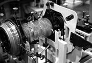 |
Drive
By Wire system and accelerator pedal stroke circuit-tuned,
for improved throttle response
Circuit
testing has been extensively employed to tune throttle
linearity and response as part of the ongoing effort
to improve vehicle control quality.
The electronically-controlled Drive by Wire (DBW)
throttle has been tuned to reach full throttle at
a pedal angle reduced from the previous 81 degrees
to 68 degrees, resulting in an accelerator pedal
stroke reduction of some 8mm. At the same time,
pedal control has been tuned for increased pedal
weight. The result is a more solid pedal feel with
a more instantaneous, direct throttle response.
Even if the driver's foot is jarred by outside forces
on the circuit, the system has been tuned not to
drastically change the throttle angle.
The final drive gear ratio has been lowered by 4.1%
and combined to a close-ratio 6-speed gearbox for
sharper engine pick-up and exhilarating throttle
response. (All figures relative to base model.)
|
DBW
tuning characteristics
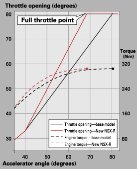 |
|
Accelerator
pedal weight characteristics
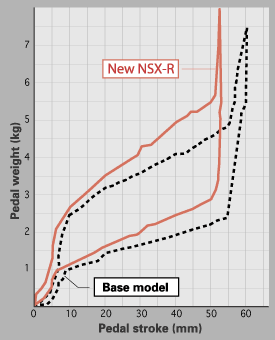 |
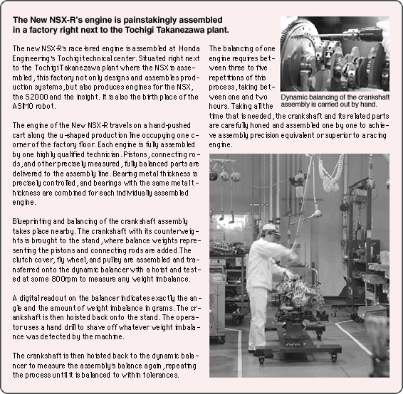 |
Highly
functional accoutrements further improve ease of
operation for increased speed and driving pleasure
The
relentless pursuit of vehicle control quality in
the New NSX-R extends to all cockpit parts within
the driver's reach. No matter how high the car's
dynamic performance has been raised, if precise
operation is not possible its potential can not
be fully realized. Items like the ball-shaped shift
knob offer superior fit and contribute toward a
new approach in vehicle control quality throughout
a wide range of driver positions.
|
Titanium
ball-shaped shift knob suits a wide range of driving
styles
Shift
knob shape was tested on the circuit, resulting
in the selection of a ball-shaped design for its
superior operating feel and adaptability to a wide
range of driving styles. The knob is sculpted from
pure titanium for a simple, sturdy feel. Such is
the attention to detail that, when hand carving
the yellow shift pattern, we polished the edges
down so that the driver would not be distracted
by the feel of the numbering while griping the knob.
The shift knob is also complemented by a lightweight
mesh jersey boot that matches the new interior design.
Weight reduction is pursued right down to this level
of detail.
|
Shift
indicator uses green and red flashing lights to
inform the driver of proper up-shift timing
The
shift indicator uses green and red lights which
flash then light up to indicate the power peak and
rev limit, respectively, promoting more precise
up-shifting and a more exhilarating driving experience.
Standard power peak is 7,100rpm and standard rev
limit 7,700rpm, with each light set to flash and
then light up as the standard value is reached.
The standard rev limit for first and second gears,
however, is set 200rpm lower.
Operating parameters require that the transmission
be in gear and the throttle open 17° or wider.
Control of the lights 'flashing and lighting up is
carried out by the engine's ECU. Operating parameters
are set for circuit or other spirited driving conditions.
The gauges employ yellow needles unique to the new
NSX-R, with a red ring around the outside for an
exhilarating design befitting a car built for speed.
The orange numbering on the dials is illuminated
for a unified look day and night.
|
Seats
upholstered in perforated suede with mesh jersey
side supports, for improved hold
The
full-bucket Recaro seats employ a carbon Aramid
shell for superior hold and weight reduction. The
side supports are upholstered in light, breathable
mesh jersey, with the seat and seat back covered
in perforated lux suede, for reduced sliding of
the driver's racing suite during high-G conditions.
This seat was selected to help the driver perform
to his maximum potential on the race circuit.
|
A
small-diameter, leather-wrapped Momo steering wheel
and other high-performance cockpit accoutrements
The
360mm small-diameter leather-wrapped Momo steering
wheel* helps the driver respond quickly. Other features
include side panels and shift plates made from real
carbon fiber, an instrument panel made of high-matt
rubber to minimize reflective glare on the front
windshield, and aluminum pedals available through
the Custom Order Plan.
*
In cars equipped with the manufacturer's optional
dual SRS airbags, only the leather-wrapped portion
is made by Momo.
|
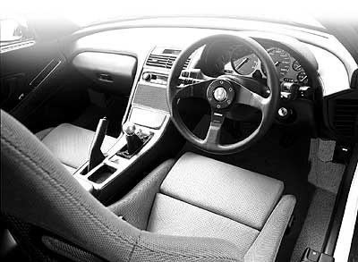 |
Weight
reduction down to the last gram, for more nimble
performance
Weight
reduction was one of the major themes in the creation
of the NSX, as is evidenced by its all-aluminum
body and other features. Over the years, and throughout
the NSX's performance evolution, we have continued
to pursue further weight reduction for enhanced
driving performance. The design of the new NSX-R
incorporates weight reduction technologies achieved
through the evolution of the new-generation base
model, as well as inheriting those innovations initiated
in the first-generation NSX-R. Challenging ourselves
to even further weight reduction, this time around
we have employed ultra-lightweight carbon fiber
materials. The rear partition glass has also been
made thinner and high-matt rubber employed in the
instrument panel, for painstaking weight reduction
right down to the last gram.
|
Years
of experimentation and the introduction of new carbon
fiber materials,
combined with the determination to shave off excess
weight wherever it could be found,
resulted in a vehicle weight of just 1,270kg*
Throughout the NSX's many years of evolution, we
have continued to pursue further weight reduction
as a vital factor in sports car performance.
Performance improvements such as the adoption of
a 3.2-liter engine for higher output, a 6-speed
manual transmission, wider tires and wheels, along
with emissions reduction and other environmental
and safety measures, led to unavoidable weight gains.
Countermeasures were taken, though, resulting in
a 2002 base model that boasts a vehicle weight 10kg
less than that of the debut model.
And now the new NSX-R has achieved further major
weight reduction, despite the added weight of its
aerodynamic parts. Innovations include special custom
lightening for the NSX-R, along with the use of
new ultra-light carbon fiber materials. A carbon
fiber hood results in a 2.20kg saving, while the
carbon fiber rear spoiler saves 1.30kg. Furthermore,
thinner rear partition glass saves 0.20kg, the high-matt
rubber instrument panel 0.62kg, the mesh jersey
shift boot 0.01kg, for painstaking weight reduction
right down to the last gram. The result: a vehicle
weight of just 1,270kg. The spare tire was also
removed**, holding outfitted weight down to a mere
1,274kg.
* Vehicle weight as officially registered.
** Equipped with aerosol-type puncture kit. Spare
tire can be ordered separately through automotive
dealers.
|
Weight
reduction of the new NSX-R achieved
through years of accumulated know-how and new innovations
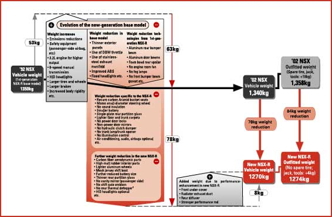 |
Major
Equipment
|
|
indicates Type R onlyindicates
standard NSXindicates
manufacturer's option |
|
| Safety
equipment |
Specially
tuned ABS (anti-lock braking system) |
| |
High-mount
brake light |
| |
Clutch
start system Seatbelt
pretensioners |
| |
SRS
airbag system, driver and passenger sides* |
|
|
| Instrument
panel |
Momo
leather-wrapped steering wheel** |
| |
Carbon-black
instrument panel with yellow needles |
| |
Shift
indicator 300km/h
full scale speedometer |
| |
Tilting,
telescopic steering wheel mechanism |
|
|
| Interior |
Titanium
ball-shaped shift knob Lightweight
floor carpet (red) |
| |
Aluminum-carbon
fiber combination center panel |
| |
High-matt
rubber furnishings*** Custom
thin partition glass |
| |
Carbon
fiber side panels and shift plate Mesh-type
shift boot |
| |
Power
windows Console
with center armrest |
| |
Locking
glove box (with light) Footrest
(driver's side) |
| |
Fully-automated
air conditioning**** |
| |
BOSE
sound system (AM/FM electronic tuner, cassette
deck, built-in amp/equalizer, 4 speakers)***** |
|
|
| Seats |
Custom
leather Recaro bucket seats Electric
slide adjustment |
|
|
| Exterior |
Carbon
fiber hood with air outlet duct Front
under-cover with fins |
| |
Carbon
fiber rear spoiler (Built-in high-mount brake
light) |
| |
Rear
diffuser Honda
emblem (Red) Custom
headlight garnish(Championship White) |
| |
Custom
intake manifold top cover (Red) |
| |
Heat
blocking, UV cut glass (sides) |
| |
Variable
intermittent front wipers (with mist function) |
| |
Projector-type
HID headlights (low beam)***** |
| |
Rear
hatch garnish****** |
|
|
| Performance
features |
Custom-tuned
DBW (Drive By Wire) Pre-loaded
LSD (custom pre-set weight) 4-wheel
ventilated disk brakes (slitted) Custom
hard-tuned suspension Body-reinforced
damper bar (rear) Body-reinforced
aluminum pipes x2 (front) Custom
low-ratio final gear |
|
|
| Tires,
wheels |
High-grip
tires: Potenza RE070 (front: 215/40R17 83Y;
rear: 255/40R17 94Y) Custom
aluminum wheels developed in cooperation with
BBS (Washibeam) (Championship White; front:
17x7JJ; rear: 17x9JJ)
Aerosol-type
tire puncture repair kit*******
Electric
air pump Pressure
gauge |
|
|
*
Supplied as a package with air conditioning and
BOSE sound system.
** In cars equipped with the manufacturer's optional
dual SRS airbags, only the leather-wrapped portion
is made by Momo.
*** Does not apply to passenger-side airbag cover
in cars equipped with the manufacturer's optional
dual SRS airbag system.
**** Also includes thermal rear window defogger.
***** Supplied as a package with air conditioning.
****** Cannot be combined with other manufacturer's
options.
******* Spare tire can be ordered separately through
automotive dealers. (Storage in rear trunk space.)
 Some
manufacturer's options cannot be combined. Other
options may only be available as a package. Some
manufacturer's options cannot be combined. Other
options may only be available as a package.
Specifications
are subject to change without notice. |
Specifications
|
|
NSX
Type R |
| 3.2L,
6-speed manual |
| Model
type |
Honda
LA-NA2 |
Dimensions
/
Weight /
Seating
capacity |
L
x W x H (m) |
4.430/1.810/1.160 |
| Wheelbase
(m) |
2.530 |
| Tread
(m) front/rear |
1.510/1.540 |
| Ground
clearance (m) |
0.125 |
| Vehicle
weight (kg) |
1,270 |
| with
air conditioner |
1,290 |
| with
air conditioner and airbags |
1,300 |
| with
rear hatch garnish |
1,270 |
| Seating
capacity |
2 |
| abin
dimensions (m) |
Length |
|
0.920 |
| Width |
1.460 |
| Height |
0.980 |
| Engine |
Engine
model |
C32B |
| Type |
Water-cooled
horizontal V6 |
| Valve
train |
DOHC
belt-drive, 2 intake, 2 exhaust |
| Displacement
(cm3) |
3,179 |
| Bore
x stroke (mm) |
93.0
x 78.0 |
| Compression
ratio |
10.2:1 |
| Fuel
supply system |
Electronic
fuel injection (Honda PGM-FI) |
| Fuel
required |
Unleaded
premium gasoline |
| Fuel
tank capacity (L) |
70 |
| Performance |
Max.
output (kW[PS]/rpm)* |
206[280]/7,300 |
| Max.
torque (N-m[kg-m]/rpm)* |
304[31.0]/5,300 |
uel
consumption (km/L)
driven
in 10-15 mode (Japanese Ministry of Land, Infrastructure
and Transport figure) |
8.6 |
| Main
fuel-efficiency technology |
Variable
valve timing |
| Min.
turning radius (m) |
5.8 |
| Drive
train |
Gearshift
mechanism |
Floor
shift type |
| |
3.066 |
| 2nd
gear |
1.956 |
| 3rd
gear |
1.428 |
| 4th
gear |
1.125 |
| 5th
gear |
0.914 |
| 6th
gear |
0.717 |
| Reverse |
3.186 |
| Reduction
ratio |
4.235 |
| Steering
system |
Rack
and pinion |
| |
215/40R17
83Y |
| Rear |
255/40R17
94Y |
| Brake
type (front/rear) |
Hydraulic
ventilated disk |
| Suspension
type (front/rear) |
Double
wishbone |
| Stabilizer
type (front/rear) |
Torsion
bar |
|
|
"*"indicates
net value. Net values are obtained under conditions
simulating those of the engine mounted in the vehicle. |
|
A
new measurement system is being introduced, moving
from PS to kW for output, and from kg-m to N-m for
torqu |
|
Fuel
consumption is determined under predetermined testing
conditions. Actual consumption may vary with driving
conditions (climate, road surface, vehicle, driving,
maintenance, etc.) |
|
Specifications
presented as officially registered under regulations
governing vehicles driven on public roads. |
|
NSX,
PGM-FI, and VTEC are registered trademarks of Honda
Motor Co., Ltd. |
|
Manufactured
by Honda Motor Co., Ltd. |
NSX
Type R, tri-perspective diagram (units: mm)
|
| 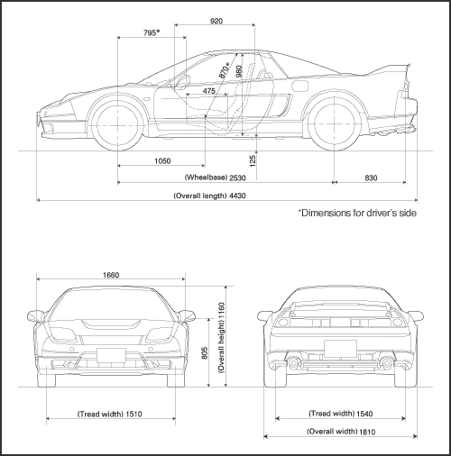 |
|
|
|
|
|
|